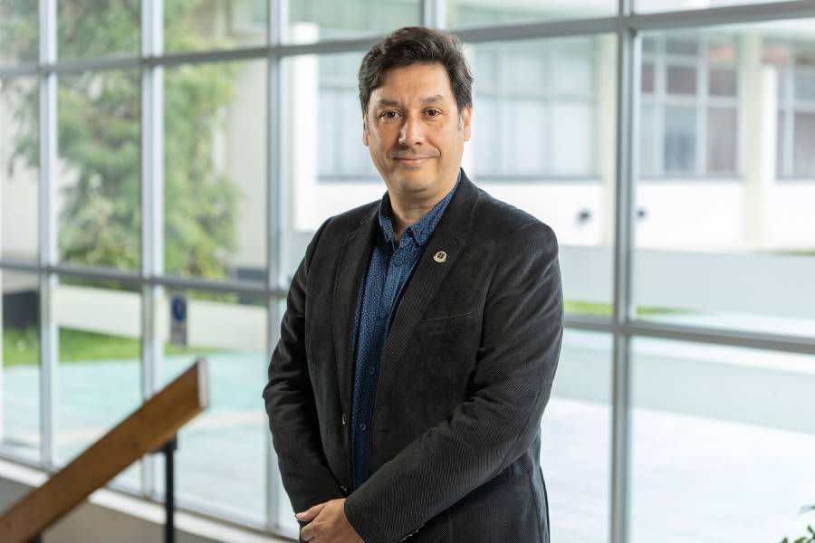

Información general
- Grado: Doctor en Psicología
- Duración de los Estudios: 8 semestres académicos
- Destinatarios: Licenciados y/o magísteres en psicología o en una disciplina afín, otorgado por un programa acreditado de una universidad nacional o de una universidad extranjera de reconocida calidad internacional.

Dr. Manuel Ortiz Parada, Director Doctorado
Presentación
Este Programa de Doctorado en Psicología posee un carácter académico, se imparte en un régimen presencial y diurno, y la aprobación de todas sus asignaturas y actividades curriculares conduce a la obtención del Grado de Doctor/a en Psicología. Adicionalmente, este programa otorga un rol central a la enseñanza mediante tutoría presencial y exige al estudiante dedicación exclusiva, la cual deberá quedar comprometida por el estudiante al momento de postular.
-
Objetivo general
Otorgar una formación avanzada en fundamentos de la ciencia psicológica, métodos de investigación y psicología cultural, y desarrollar capacidades para realizar investigación original.
-
Objetivos específicos
- Formar graduados/as capaces de desarrollar investigación original en Psicología, aplicando métodos avanzados de investigación, con la finalidad de generar conocimiento disciplinar actualizado.
- Formar graduados/as capaces de elaborar documentos científicos (proyectos de investigación, artículos, libros, y similares) de acuerdo a normas y criterios atingentes a cada uno de ellos.
- Formar graduados/as capaces de comunicar efectivamente el conocimiento disciplinar y los resultados de investigaciones, en actividades académicas y de formación, tanto con público especializado y no especializado, como con estudiantes de pre y postgrado.
-
Perfil de ingreso
El/la estudiante del Doctorado en Psicología posee el grado de licenciatura y/o magíster en psicología u otras disciplinas afines. Manifiesta interés en investigar y generar conocimiento científico; demuestra competencias en estadísticas, métodos de investigación (en nivel básico o intermedio) y lectura comprensiva en inglés. Tiene experiencia en docencia e investigación científica acorde a su grado académico (por ejemplo, ayudantías, docencia universitaria de pre y/o postgrado, participación en proyectos de investigación y publicaciones científicas)
-
Perfil de egreso
El/La Doctor/a en Psicología de la Universidad de La Frontera es un/a graduado/a con formación avanzada en fundamentos de la ciencia psicológica, métodos de investigación y psicología cultural, y capacidades para desarrollar investigación original.
Su formación enfatiza el rol que tiene la cultura en los procesos psicológicos asociados al desarrollo humano y social, habilitándolo/a para desarrollar investigación original en Psicología, aplicando métodos avanzados de investigación, con la finalidad de generar conocimiento disciplinar actualizado, elaborar documentos científicos (proyectos de investigación, artículos, libros, y similares) de acuerdo a normas y criterios atingentes a cada uno de ellos, y comunicar efectivamente el conocimiento disciplinar y los resultados de investigaciones, en actividades académicas y de formación, tanto con público especializado y no especializado, como con estudiantes de pre y postgrado.
El/La Doctor/a en Psicología graduado/a de la Universidad de La Frontera, podrá desempeñarse en universidades, centros de investigación e instituciones públicas y privadas. Ejercerá su trabajo tanto en forma autónoma como integrando equipos, respetando la diversidad socio-cultural, y actuando acorde a principios éticos vigentes de la disciplina.